Research log May
jliucx
2024-12-5
Last updated: 2025-05-27
Checks: 6 1
Knit directory: Getting_started/
This reproducible R Markdown analysis was created with workflowr (version 1.7.1). The Checks tab describes the reproducibility checks that were applied when the results were created. The Past versions tab lists the development history.
Great! Since the R Markdown file has been committed to the Git repository, you know the exact version of the code that produced these results.
Great job! The global environment was empty. Objects defined in the global environment can affect the analysis in your R Markdown file in unknown ways. For reproduciblity it’s best to always run the code in an empty environment.
The command set.seed(20240712) was run prior to running the code in the R Markdown file. Setting a seed ensures that any results that rely on randomness, e.g. subsampling or permutations, are reproducible.
Great job! Recording the operating system, R version, and package versions is critical for reproducibility.
Nice! There were no cached chunks for this analysis, so you can be confident that you successfully produced the results during this run.
Using absolute paths to the files within your workflowr project makes it difficult for you and others to run your code on a different machine. Change the absolute path(s) below to the suggested relative path(s) to make your code more reproducible.
| absolute | relative |
|---|---|
| /project/xuanyao/jiaming/Getting_started | . |
| /project/xuanyao/jiaming/Getting_started/data/Morris/program_data_nature_cNMF/gene_module_index_matrix.rds | data/Morris/program_data_nature_cNMF/gene_module_index_matrix.rds |
| /project/xuanyao/jiaming/Getting_started/data/Morris_adjusted/program_data/grna_target_data_frame_omit.rds | data/Morris_adjusted/program_data/grna_target_data_frame_omit.rds |
| /project/xuanyao/jiaming/Getting_started/data/Morris_adjusted/program_data/discovery_pairs_cis.rds | data/Morris_adjusted/program_data/discovery_pairs_cis.rds |
| /project/xuanyao/jiaming/Getting_started/output/Morris/remove_cis_match_grna/4_cov_high_expressed_gene/cNMF_10000_wilcox_no_approx_sceptre_perturbation_gene_remove_/resample_normal_test_statistics.csv | output/Morris/remove_cis_match_grna/4_cov_high_expressed_gene/cNMF_10000_wilcox_no_approx_sceptre_perturbation_gene_remove_/resample_normal_test_statistics.csv |
| /project/xuanyao/jiaming/Getting_started/output/Morris/sceptre_all_pairs/author_threshold_updated/results_run_discovery_analysis.rds | output/Morris/sceptre_all_pairs/author_threshold_updated/results_run_discovery_analysis.rds |
| /project/xuanyao/jiaming/Getting_started/output/Morris/sceptre_all_pairs/author_threshold_updated/results_run_calibration_check.rds | output/Morris/sceptre_all_pairs/author_threshold_updated/results_run_calibration_check.rds |
| /project/xuanyao/jiaming/Getting_started/output/Morris/remove_cis_match_grna/4_cov/cNMF_10000_no_approximation_replace_previous/resample_normal_test_statistics.csv | output/Morris/remove_cis_match_grna/4_cov/cNMF_10000_no_approximation_replace_previous/resample_normal_test_statistics.csv |
| /project/xuanyao/jiaming/Getting_started/output/Morris/remove_cis_match_grna/4_cov/cNMF_3000_skew_t_approximation/resample_normal_test_statistics.csv | output/Morris/remove_cis_match_grna/4_cov/cNMF_3000_skew_t_approximation/resample_normal_test_statistics.csv |
| /project/xuanyao/jiaming/Getting_started/output/Morris/remove_cis_match_grna/4_cov/cNMF_50000_no_approximation_replace_previous/resample_normal_test_statistics.csv | output/Morris/remove_cis_match_grna/4_cov/cNMF_50000_no_approximation_replace_previous/resample_normal_test_statistics.csv |
| /project/xuanyao/jiaming/Getting_started/output/Morris/remove_cis_match_grna/4_cov_t_test/cNMF_10000_no_approx_pooled_rank_t/resample_normal_test_statistics.csv | output/Morris/remove_cis_match_grna/4_cov_t_test/cNMF_10000_no_approx_pooled_rank_t/resample_normal_test_statistics.csv |
| /project/xuanyao/jiaming/Getting_started/output/Morris/remove_cis_match_grna/4_cov_high_expressed_gene/NTC_complete_set/NONOVERLAP_FAKE_set_70genes_per_set_10000_wilcox/resample_normal_test_statistics.csv | output/Morris/remove_cis_match_grna/4_cov_high_expressed_gene/NTC_complete_set/NONOVERLAP_FAKE_set_70genes_per_set_10000_wilcox/resample_normal_test_statistics.csv |
| /project/xuanyao/jiaming/Getting_started/output/Morris/remove_cis_match_grna/4_cov_high_expressed_gene/NTC_high_expressed_set/NONOVERLAP_FAKE_set_70genes_per_set_10000_wilcox/resample_normal_test_statistics.csv | output/Morris/remove_cis_match_grna/4_cov_high_expressed_gene/NTC_high_expressed_set/NONOVERLAP_FAKE_set_70genes_per_set_10000_wilcox/resample_normal_test_statistics.csv |
| /project/xuanyao/jiaming/Getting_started/output/Morris/remove_cis_match_grna/4_cov_high_expressed_gene/NTC_complete_set/NTC_complete_FAKE_set_70genes_per_set_10000_wilcox/resample_normal_test_statistics.csv | output/Morris/remove_cis_match_grna/4_cov_high_expressed_gene/NTC_complete_set/NTC_complete_FAKE_set_70genes_per_set_10000_wilcox/resample_normal_test_statistics.csv |
| /project/xuanyao/jiaming/Getting_started/output/Morris/remove_cis_match_grna/4_cov_high_expressed_gene/NTC_high_expressed_set/NTC_FAKE_set_70genes_per_set_10000_wilcox/resample_normal_test_statistics.csv | output/Morris/remove_cis_match_grna/4_cov_high_expressed_gene/NTC_high_expressed_set/NTC_FAKE_set_70genes_per_set_10000_wilcox/resample_normal_test_statistics.csv |
| /project/xuanyao/jiaming/Getting_started/output/Morris/remove_cis_match_grna/4_cov_high_expressed_gene/NTC_complete_set/NONOVERLAP_FAKE_set_70genes_per_set_10000_wilcox_1/resample_normal_test_statistics.csv | output/Morris/remove_cis_match_grna/4_cov_high_expressed_gene/NTC_complete_set/NONOVERLAP_FAKE_set_70genes_per_set_10000_wilcox_1/resample_normal_test_statistics.csv |
| /project/xuanyao/jiaming/Getting_started/output/Morris/remove_cis_match_grna/4_cov_high_expressed_gene/NTC_complete_set/NONOVERLAP_FAKE_set_70genes_per_set_10000_wilcox_2/resample_normal_test_statistics.csv | output/Morris/remove_cis_match_grna/4_cov_high_expressed_gene/NTC_complete_set/NONOVERLAP_FAKE_set_70genes_per_set_10000_wilcox_2/resample_normal_test_statistics.csv |
| /project/xuanyao/jiaming/Getting_started/output/Morris/remove_cis_match_grna/4_cov_high_expressed_gene/NTC_complete_set/NONOVERLAP_FAKE_set_70genes_per_set_10000_wilcox_3/resample_normal_test_statistics.csv | output/Morris/remove_cis_match_grna/4_cov_high_expressed_gene/NTC_complete_set/NONOVERLAP_FAKE_set_70genes_per_set_10000_wilcox_3/resample_normal_test_statistics.csv |
| /project/xuanyao/jiaming/Getting_started/output/Morris/remove_cis_match_grna/4_cov_high_expressed_gene/NTC_complete_set/NONOVERLAP_FAKE_set_70genes_per_set_10000_wilcox_4/resample_normal_test_statistics.csv | output/Morris/remove_cis_match_grna/4_cov_high_expressed_gene/NTC_complete_set/NONOVERLAP_FAKE_set_70genes_per_set_10000_wilcox_4/resample_normal_test_statistics.csv |
| /project/xuanyao/jiaming/Getting_started/output/Morris/remove_cis_match_grna/4_cov_high_expressed_gene/NTC_complete_set/NONOVERLAP_FAKE_set_70genes_per_set_10000_wilcox_5/resample_normal_test_statistics.csv | output/Morris/remove_cis_match_grna/4_cov_high_expressed_gene/NTC_complete_set/NONOVERLAP_FAKE_set_70genes_per_set_10000_wilcox_5/resample_normal_test_statistics.csv |
| /project/xuanyao/jiaming/Getting_started/output/Morris/remove_cis_match_grna/4_cov_high_expressed_gene/NTC_high_expressed_set/NONOVERLAP_FAKE_set_70genes_per_set_10000_wilcox_1/resample_normal_test_statistics.csv | output/Morris/remove_cis_match_grna/4_cov_high_expressed_gene/NTC_high_expressed_set/NONOVERLAP_FAKE_set_70genes_per_set_10000_wilcox_1/resample_normal_test_statistics.csv |
| /project/xuanyao/jiaming/Getting_started/output/Morris/remove_cis_match_grna/4_cov_high_expressed_gene/NTC_high_expressed_set/NONOVERLAP_FAKE_set_70genes_per_set_10000_wilcox_2/resample_normal_test_statistics.csv | output/Morris/remove_cis_match_grna/4_cov_high_expressed_gene/NTC_high_expressed_set/NONOVERLAP_FAKE_set_70genes_per_set_10000_wilcox_2/resample_normal_test_statistics.csv |
| /project/xuanyao/jiaming/Getting_started/output/Morris/remove_cis_match_grna/4_cov_high_expressed_gene/NTC_high_expressed_set/NONOVERLAP_FAKE_set_70genes_per_set_10000_wilcox_3/resample_normal_test_statistics.csv | output/Morris/remove_cis_match_grna/4_cov_high_expressed_gene/NTC_high_expressed_set/NONOVERLAP_FAKE_set_70genes_per_set_10000_wilcox_3/resample_normal_test_statistics.csv |
| /project/xuanyao/jiaming/Getting_started/output/Morris/remove_cis_match_grna/4_cov_high_expressed_gene/NTC_high_expressed_set/NONOVERLAP_FAKE_set_70genes_per_set_10000_wilcox_4/resample_normal_test_statistics.csv | output/Morris/remove_cis_match_grna/4_cov_high_expressed_gene/NTC_high_expressed_set/NONOVERLAP_FAKE_set_70genes_per_set_10000_wilcox_4/resample_normal_test_statistics.csv |
| /project/xuanyao/jiaming/Getting_started/output/Morris/remove_cis_match_grna/4_cov_high_expressed_gene/NTC_high_expressed_set/NONOVERLAP_FAKE_set_70genes_per_set_10000_wilcox_5/resample_normal_test_statistics.csv | output/Morris/remove_cis_match_grna/4_cov_high_expressed_gene/NTC_high_expressed_set/NONOVERLAP_FAKE_set_70genes_per_set_10000_wilcox_5/resample_normal_test_statistics.csv |
| /project/xuanyao/jiaming/Getting_started/output/Morris/debug/cNMF_10000_wilcox_no_approx_sceptre_perturbation_gene_remove/genewise_p_combined_all.rds | output/Morris/debug/cNMF_10000_wilcox_no_approx_sceptre_perturbation_gene_remove/genewise_p_combined_all.rds |
| /project/xuanyao/jiaming/Getting_started/data/Morris_adjusted/program_data_nature_cNMF/perturbation_gene_filtered.rds | data/Morris_adjusted/program_data_nature_cNMF/perturbation_gene_filtered.rds |
| /project/xuanyao/jiaming/Getting_started/output/Morris/debug/cNMF_10000_wilcox_no_approx_sceptre_perturbation_gene_remove | output/Morris/debug/cNMF_10000_wilcox_no_approx_sceptre_perturbation_gene_remove |
| /project/xuanyao/jiaming/Getting_started/output/Morris/debug/cNMF_10000_wilcox_no_approx_sceptre_perturbation_gene_remove/NB_plots | output/Morris/debug/cNMF_10000_wilcox_no_approx_sceptre_perturbation_gene_remove/NB_plots |
| /project/xuanyao/jiaming/Getting_started/output/Morris/debug/cNMF_10000_wilcox_no_approx_sceptre_perturbation_gene_remove/NB_values | output/Morris/debug/cNMF_10000_wilcox_no_approx_sceptre_perturbation_gene_remove/NB_values |
| /project/xuanyao/jiaming/Getting_started/output/Morris/debug/cNMF_10000_wilcox_no_approx_sceptre_perturbation_gene_remove/NB_1000_test_statistics | output/Morris/debug/cNMF_10000_wilcox_no_approx_sceptre_perturbation_gene_remove/NB_1000_test_statistics |
Great! You are using Git for version control. Tracking code development and connecting the code version to the results is critical for reproducibility.
The results in this page were generated with repository version 021a0e1. See the Past versions tab to see a history of the changes made to the R Markdown and HTML files.
Note that you need to be careful to ensure that all relevant files for the analysis have been committed to Git prior to generating the results (you can use wflow_publish or wflow_git_commit). workflowr only checks the R Markdown file, but you know if there are other scripts or data files that it depends on. Below is the status of the Git repository when the results were generated:
Ignored files:
Ignored: .Rhistory
Ignored: .Rproj.user/
Ignored: analysis/run.sh
Ignored: analysis/run_R.sh
Untracked files:
Untracked: analysis/sceptre_singleton.R
Untracked: analysis/sceptre_singleton.Rmd
Untracked: analysis/sceptre_threshold.Rmd
Untracked: code/debug.Rmd
Untracked: code/discovery.pdf
Untracked: code/draft.Rmd
Untracked: code/find_gene_set.Rmd
Untracked: code/fit_skew_normal.cpp
Untracked: code/functions_optimized.R
Untracked: code/general_data_optimized.R
Untracked: code/minp.R
Untracked: code/nature_data_edit.Rmd
Untracked: code/negative_control.Rmd
Untracked: code/negative_control.pdf
Untracked: code/newest.R
Untracked: code/parallel/
Untracked: code/plots_generator.Rmd
Untracked: code/rcc_err/
Untracked: code/rcc_jobs/
Untracked: code/rcc_out/
Untracked: code/remove_cis.R
Untracked: code/remove_cis_optimize.R
Untracked: code/render_pdf.Rmd
Untracked: code/render_pdf_ntc.Rmd
Untracked: code/render_pdf_ntc.pdf
Untracked: code/run_R_caslake.sh
Untracked: code/sceptre/
Untracked: code/t_test.cpp
Untracked: code/utilizer/
Untracked: data/
Untracked: docs_destroyed/
Untracked: output/Morris/
Untracked: output/Xie/
Untracked: output/debug/
Untracked: output/nature/
Untracked: output/newest/
Untracked: temp/
Unstaged changes:
Deleted: analysis/reseach_log_May.Rmd
Modified: analysis/research_log.Rmd
Modified: code/run_R.sh
Note that any generated files, e.g. HTML, png, CSS, etc., are not included in this status report because it is ok for generated content to have uncommitted changes.
These are the previous versions of the repository in which changes were made to the R Markdown (analysis/research_log_May.Rmd) and HTML (docs/research_log_May.html) files. If you’ve configured a remote Git repository (see ?wflow_git_remote), click on the hyperlinks in the table below to view the files as they were in that past version.
| File | Version | Author | Date | Message |
|---|---|---|---|---|
| Rmd | 021a0e1 | jliucx | 2025-05-27 | adjust fig size |
1 May 20 - Morris - cNMF - Perturbation gene pair qc
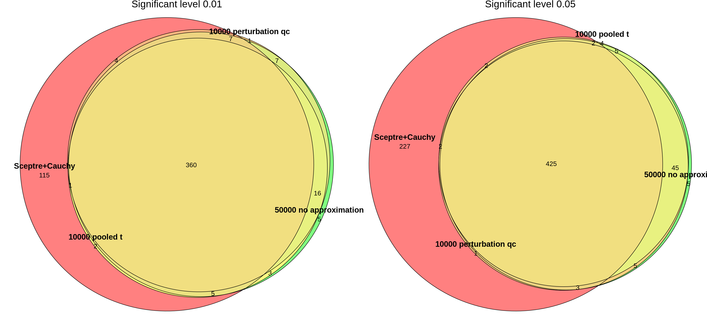
2 May 21 - deflation problem - focusing on high expressed genes
p1<- gg_qqplot(as.vector(as.matrix(read.csv("/project/xuanyao/jiaming/Getting_started/output/Morris/remove_cis_match_grna/4_cov_high_expressed_gene/NTC_complete_set/NONOVERLAP_FAKE_set_70genes_per_set_10000_wilcox/resample_normal_test_statistics.csv",row.names = 1))), title="100 fake sets, NON-OVERLAP qced gene, 70 genes per set")
p2<- gg_qqplot(as.vector(as.matrix(read.csv("/project/xuanyao/jiaming/Getting_started/output/Morris/remove_cis_match_grna/4_cov_high_expressed_gene/NTC_high_expressed_set/NONOVERLAP_FAKE_set_70genes_per_set_10000_wilcox/resample_normal_test_statistics.csv",row.names = 1))), title="100 fake sets, NON-OVERLAP high-expressed gene, 70 genes per set")data_matrix <- as.matrix(read.csv("/project/xuanyao/jiaming/Getting_started/output/Morris/remove_cis_match_grna/4_cov_high_expressed_gene/NTC_complete_set/NTC_complete_FAKE_set_70genes_per_set_10000_wilcox/resample_normal_test_statistics.csv", row.names = 1))
# Function to make one QQ plot with a specific seed
make_qq_plot <- function(seed) {
set.seed(seed)
sampled_data <- data_matrix[, sample(1000, 100)]
gg_qqplot(as.vector(sampled_data), title = paste0("100 fake sets, OVERLAPPING, All qced, Seed = ", seed))
}
seeds <- 1:10
plots <- lapply(seeds, make_qq_plot)data_matrix <- as.matrix(read.csv("/project/xuanyao/jiaming/Getting_started/output/Morris/remove_cis_match_grna/4_cov_high_expressed_gene/NTC_high_expressed_set/NTC_FAKE_set_70genes_per_set_10000_wilcox/resample_normal_test_statistics.csv", row.names = 1))
# Function to make one QQ plot with a specific seed
make_qq_plot <- function(seed) {
set.seed(seed)
sampled_data <- data_matrix[, sample(1000, 100)]
gg_qqplot(as.vector(sampled_data), title = paste0("100 fake sets, OVERLAPPING, High expressed, Seed = ", seed))
}
seeds <- 1:10
plots_2 <- lapply(seeds, make_qq_plot)library(gridExtra)
all_plots <- c(list(p1), plots,list(p2),plots_2)
n <- length(all_plots)
ncol <- 2
nrow <- ceiling(n / ncol)
# 生成按列填充的 layout_matrix
layout_matrix <- matrix(1:(nrow * ncol), nrow = nrow, ncol = ncol, byrow = FALSE)
# 用 grid.arrange 强制按照 layout_matrix 排布
grid.arrange(grobs = all_plots, layout_matrix = layout_matrix)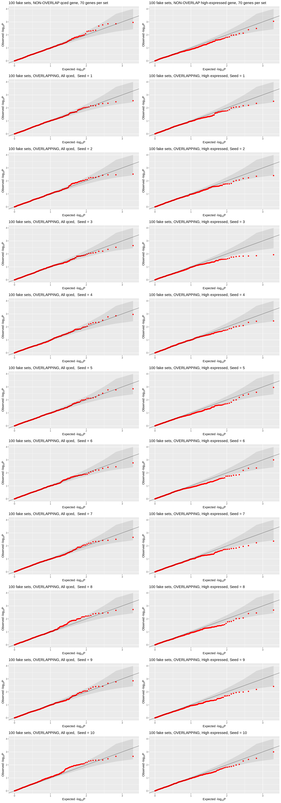
## Non-overlapping gene sets# 用 grid.arrange 强制按照 layout_matrix 排布
grid.arrange(p1,p6,p2,p7,p3,p8,p4,p9,p5,p10,ncol=2)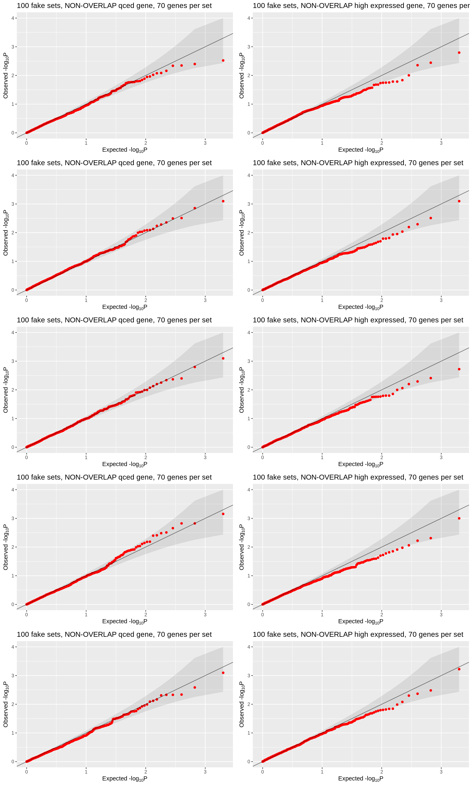
3 May 23 Debug on Perturbation gene pair qc
3.1 Sanity check for system bug
3.1.1 Gene module p value
grid.arrange( p1,p2, ncol=2)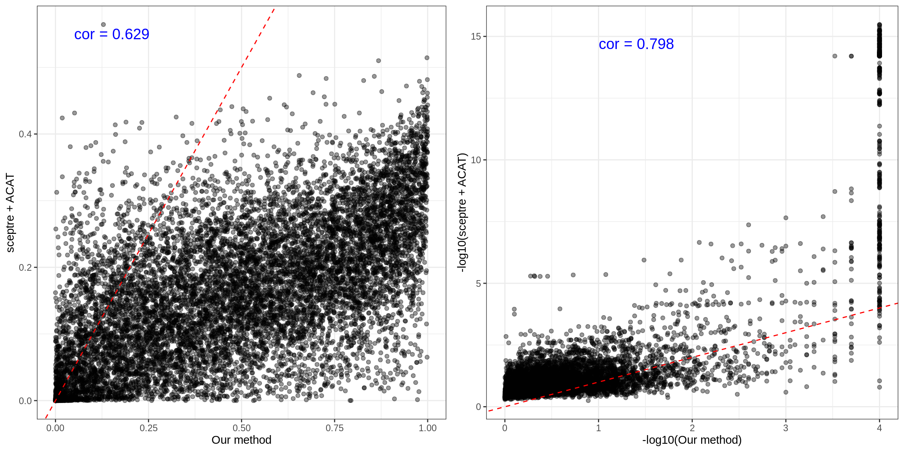
From the scatter plot, there is no systematic bug.3.1.2 Genewise p value comparison
ggplot(df, aes(x = our_method, y = sceptre)) +
geom_point(alpha = 0.4, size = 1) +
geom_abline(slope = 1, intercept = 0, color = "red", linetype = "dashed") +
annotate("text", x = 0.05, y = 8, label = paste0("cor = ", round(cor_val, 3)),
hjust = 0, size = 5, color = "blue") +
labs(x = "Our method", y = "sceptre") +
theme_bw()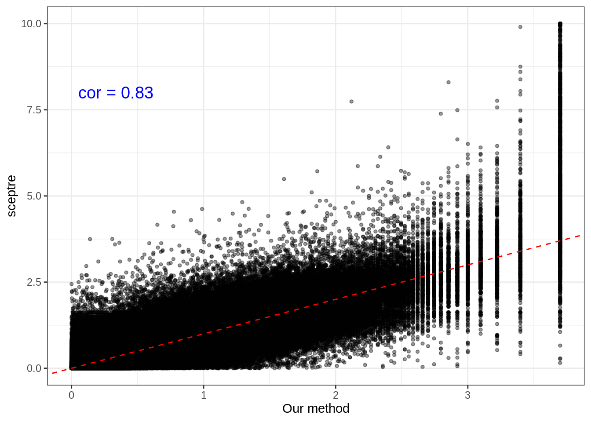
sceptre <- rbind(readRDS("/project/xuanyao/jiaming/Getting_started/output/Morris/sceptre_all_pairs/author_threshold_updated/results_run_discovery_analysis.rds")[,c(1,2,7)],
readRDS("/project/xuanyao/jiaming/Getting_started/output/Morris/sceptre_all_pairs/author_threshold_updated/results_run_calibration_check.rds")[,c(1,2,7)]
)
sceptre <- sceptre[!is.na(sceptre$p_value), ]
sceptre$p_value[sceptre$p_value == 1] <- 1 - 1e-6
sceptre_wide <- sceptre %>%
pivot_wider(names_from = response_id, values_from = p_value) %>%
as.data.frame()
# Set the row names to be the grna_id and remove the grna_id column
rownames(sceptre_wide) <- sceptre_wide$grna_id
sceptre_wide <- sceptre_wide[, -1]
sceptre_wide <- sceptre_wide[rownames(max_stat)[rownames(max_stat) %in% rownames(sceptre_wide)], ]
sceptre_wide <- sceptre_wide[, rownames(gene_module_index_matrix), drop = FALSE]
genewise_p_combined_all <- readRDS("/project/xuanyao/jiaming/Getting_started/output/Morris/debug/cNMF_10000_wilcox_no_approx_sceptre_perturbation_gene_remove/genewise_p_combined_all.rds")
common_rows <- intersect(rownames(genewise_p_combined_all), rownames(sceptre_wide))
g_subset <- genewise_p_combined_all[common_rows, , drop = FALSE]
s_subset <- sceptre_wide[common_rows, , drop = FALSE]
# reshape 并取 -log10(p)
df_top <- melt(as.matrix(s_subset), varnames = c("SNP", "Gene"), value.name = "pval") %>%
filter(!is.na(pval)) %>%
mutate(logp = -log10(pval + 1e-300), group = "sceptre")
df_bottom <- melt(as.matrix(g_subset), varnames = c("SNP", "Gene"), value.name = "pval") %>%
filter(!is.na(pval)) %>%
mutate(logp = -(-log10(pval + 1e-300)), group = "Our method")
# 合并两部分
df_both <- bind_rows(df_top, df_bottom)
# 绘图：上下对称 Manhattan 图
ggplot(df_both, aes(x = SNP, y = logp, color = group)) +
geom_point(alpha = 0.5, size = 0.6) +
geom_hline(yintercept = 0, color = "black") +
scale_y_continuous(limits = c(-20, 20)) +
labs(x = "SNP", y = expression("± -log"[10]*"(p)")) +
theme_bw() +
theme(axis.text.x = element_blank(),
legend.position = "top")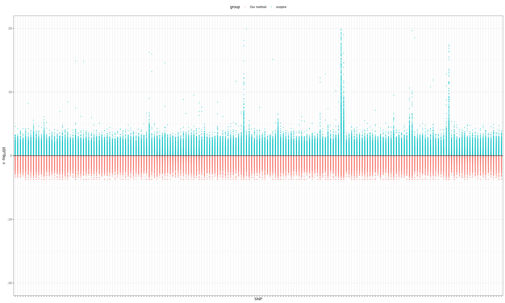
## If the minimum p val that sceptre can calculate is 1e-4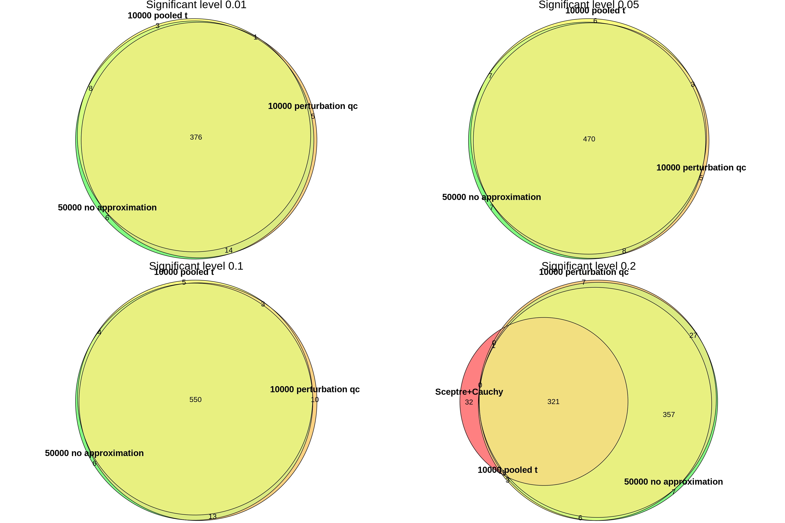
selected_rows <- which(max_stat_long$p_value > 0.8 & module_results_sceptre$acat_pval < 0.05)plot(-log10(max_stat_long$p_value),-log10(max_stat_long_2$p_value),xlab="remove low expressed gene", ylab="all qced genes",main="Remove low expressed gene")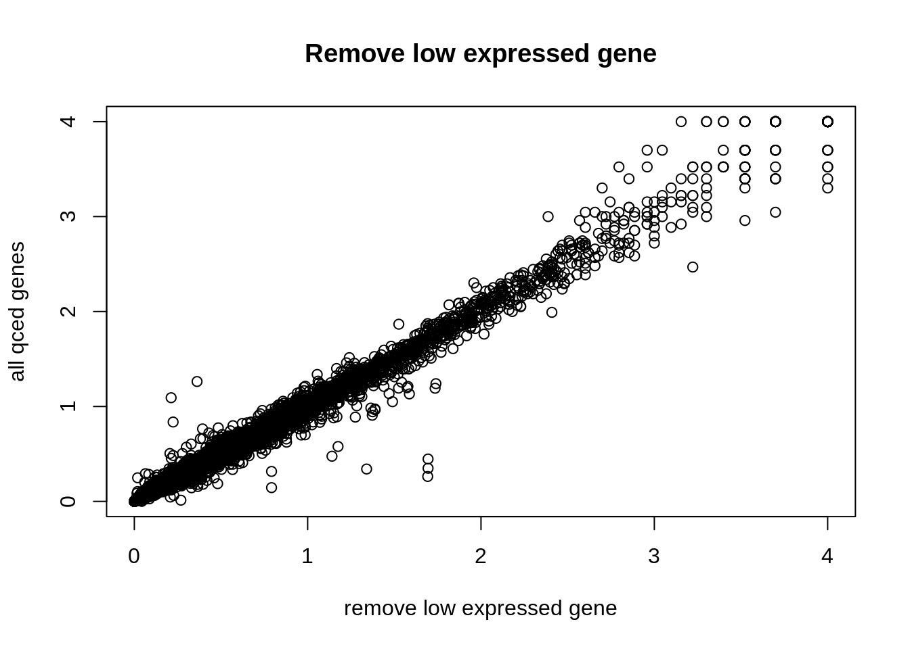
(result_to_compare<-max_stat_long[selected_rows,])# A tibble: 43 × 5
grna_id module p_value bh_pval identifier
<chr> <chr> <dbl> <dbl> <chr>
1 SNP-9_1 K60_44 0.866 0.992 SNP-9_1_K60_44
2 SNP-11_1 K60_53 0.817 0.989 SNP-11_1_K60_53
3 SNP-12_1 K60_13 0.862 0.992 SNP-12_1_K60_13
4 SNP-15_1 K60_4 0.890 0.992 SNP-15_1_K60_4
5 SNP-16_2 K60_41 0.955 0.995 SNP-16_2_K60_41
6 SNP-20_1 K60_11 0.900 0.992 SNP-20_1_K60_11
7 SNP-23_2 K60_53 0.810 0.989 SNP-23_2_K60_53
8 SNP-24_1 K60_48 0.881 0.992 SNP-24_1_K60_48
9 SNP-32_1 K60_16 0.941 0.994 SNP-32_1_K60_16
10 SNP-36_2 K60_4 0.830 0.989 SNP-36_2_K60_4
# ℹ 33 more rows(result_to_analyze<-module_results_sceptre[selected_rows,]) grna_id module acat_pval bh_pval identifier
1004 SNP-9_1 K60_44 0.040730507 0.25132864 SNP-9_1_K60_44
1253 SNP-11_1 K60_53 0.037077545 0.24240504 SNP-11_1_K60_53
1333 SNP-12_1 K60_13 0.049619786 0.26496809 SNP-12_1_K60_13
1684 SNP-15_1 K60_4 0.034904175 0.23602932 SNP-15_1_K60_4
1901 SNP-16_2 K60_41 0.049537971 0.26495334 SNP-16_2_K60_41
2291 SNP-20_1 K60_11 0.041073431 0.25208469 SNP-20_1_K60_11
2753 SNP-23_2 K60_53 0.048962834 0.26431149 SNP-23_2_K60_53
2808 SNP-24_1 K60_48 0.033940628 0.23280726 SNP-24_1_K60_48
3736 SNP-32_1 K60_16 0.042491783 0.25451864 SNP-32_1_K60_16
4264 SNP-36_2 K60_4 0.018927560 0.17646748 SNP-36_2_K60_4
4315 SNP-36_2 K60_55 0.018984574 0.17670379 SNP-36_2_K60_55
4320 SNP-36_2 K60_60 0.019645458 0.17970763 SNP-36_2_K60_60
4753 SNP-40_2 K60_13 0.040218738 0.25054412 SNP-40_2_K60_13
4756 SNP-40_2 K60_16 0.026643447 0.21076621 SNP-40_2_K60_16
4765 SNP-40_2 K60_25 0.031372190 0.22400105 SNP-40_2_K60_25
4777 SNP-40_2 K60_37 0.046209245 0.25924312 SNP-40_2_K60_37
4790 SNP-40_2 K60_50 0.032324544 0.22659668 SNP-40_2_K60_50
4956 SNP-42_1 K60_36 0.002580015 0.04422883 SNP-42_1_K60_36
5282 SNP-45_1 K60_2 0.030140122 0.22042186 SNP-45_1_K60_2
5297 SNP-45_1 K60_17 0.025797772 0.20689729 SNP-45_1_K60_17
5628 SNP-47_2 K60_48 0.023644486 0.19826289 SNP-47_2_K60_48
6142 SNP-52_1 K60_22 0.039327927 0.24904675 SNP-52_1_K60_22
6571 SNP-55_2 K60_31 0.048456116 0.26302055 SNP-55_2_K60_31
7075 SNP-59_2 K60_55 0.034180088 0.23373148 SNP-59_2_K60_55
7763 SNP-65_2 K60_23 0.044905747 0.25840487 SNP-65_2_K60_23
7764 SNP-65_2 K60_24 0.014289453 0.15030188 SNP-65_2_K60_24
7771 SNP-65_2 K60_31 0.018323039 0.17343945 SNP-65_2_K60_31
7779 SNP-65_2 K60_39 0.019352194 0.17908000 SNP-65_2_K60_39
8487 SNP-71_2 K60_27 0.001424537 0.02764840 SNP-71_2_K60_27
8514 SNP-71_2 K60_54 0.044308426 0.25714094 SNP-71_2_K60_54
9405 SNP-79_1 K60_45 0.037757920 0.24471786 SNP-79_1_K60_45
9411 SNP-79_1 K60_51 0.045748403 0.25856440 SNP-79_1_K60_51
9517 SNP-80_1 K60_37 0.013462935 0.14565023 SNP-80_1_K60_37
9541 SNP-80_2 K60_1 0.023396898 0.19691507 SNP-80_2_K60_1
10025 SNP-84_2 K60_5 0.034515793 0.23487577 SNP-84_2_K60_5
10163 SNP-85_2 K60_23 0.017645946 0.16961995 SNP-85_2_K60_23
10181 SNP-85_2 K60_41 0.038745427 0.24694401 SNP-85_2_K60_41
10194 SNP-85_2 K60_54 0.039718700 0.25020225 SNP-85_2_K60_54
10302 SNP-86_2 K60_42 0.027151314 0.21107782 SNP-86_2_K60_42
10521 SNP-88_2 K60_21 0.027122560 0.21107782 SNP-88_2_K60_21
10859 NTC-6 K60_59 0.037413968 0.24389012 NTC-6_K60_59
10870 NTC-7 K60_10 0.048263013 0.26249002 NTC-7_K60_10
10927 NTC-8 K60_7 0.043254621 0.25586732 NTC-8_K60_73.2 Geneset distribution
plot_list <- list()
setwd("/project/xuanyao/jiaming/Getting_started/output/Morris/debug/cNMF_10000_wilcox_no_approx_sceptre_perturbation_gene_remove")
for (i in 1:length(selected_rows)) {
grna_id <- result_to_analyze$grna_id[i]
gene_module <- result_to_analyze$module[i]
acat_p <- result_to_analyze$acat_pval[i]
our_p <- result_to_compare$p_value[i]
row_idx <- which(rownames(max_stat) == grna_id)
group_start <- floor((row_idx - 1) / 20) * 20 + 1
group_end <- group_start + 19
folder_name <- paste0(group_start, "_", group_end)
chunk_idx <- row_idx - group_start + 1
file_path <- file.path(folder_name, "max_statistics", paste0("max_statistics_chunk_", chunk_idx, ".rds"))
ms <- readRDS(file_path)
values <- ms[, gene_module, 1]
highlight_value <- ms[1, gene_module, 1]
df <- data.frame(values = values)
p <- ggplot(df, aes(x = values)) +
geom_histogram(bins = 1000, fill = "lightgray", color = "black") +
geom_vline(xintercept = highlight_value, color = "red", linewidth = 1) +
ggtitle(paste0("Perturbation-geneset MaxStat test: ", grna_id, " - ", gene_module)) +
xlab("Values") + ylab("Count") +
annotate("text", x = Inf, y = Inf,
hjust = 1.1, vjust = 1.5, size = 4, color = "blue",
label = paste0("ACAT p = ", signif(acat_p, 3),
"\nOur p = ", signif(our_p, 3))) +
theme_minimal()
plot_list[[i]] <- p
}gridExtra::grid.arrange(grobs = plot_list, ncol = 3)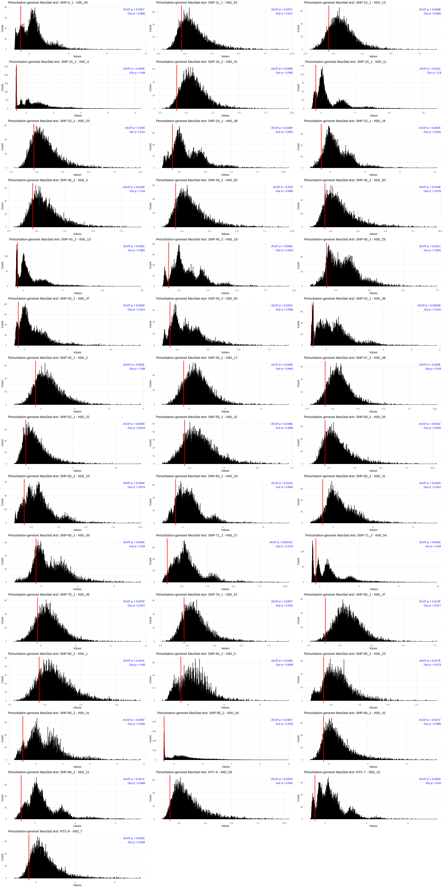
3.3 Genewise p value
plot_list <- list()
hit_list <- list() # 存储符合条件的 gene + metadata
for (i in 1:length(selected_rows)) {
grna_id <- result_to_analyze$grna_id[i]
gene_module <- result_to_analyze$module[i]
gene_to_analyze <- rownames(gene_module_index_matrix)[gene_module_index_matrix[, gene_module] == 1]
y <- as.numeric(sceptre_wide[grna_id, gene_to_analyze])
x <- as.numeric(genewise_p_combined_all[grna_id, gene_to_analyze])
valid_idx <- which(!is.na(x) & !is.na(y))
x <- x[valid_idx]
y <- y[valid_idx]
genes <- gene_to_analyze[valid_idx]
df <- data.frame(our_method = x, sceptre = y, gene = genes)
cor_val <- cor(x, y)
# 保存符合条件的 gene 信息
hit_genes <- df$gene[df$our_method > 0.3 & df$sceptre < 0.05]
if (length(hit_genes) > 0) {
hit_list[[i]] <- data.frame(
grna_id = grna_id,
gene_module = gene_module,
gene = I(list(hit_genes))
)
}
# 画图 + 添加相关系数
p <- ggplot(df, aes(x = our_method, y = sceptre)) +
geom_point(size = 2, alpha = 0.6) +
geom_abline(slope = 1, intercept = 0, linetype = "dashed", color = "red") +
annotate("text", x = 0.05, y = 0.95, label = paste0("cor = ", round(cor_val, 3)),
hjust = 0, size = 5, color = "blue") +
labs(x = "Our method", y = "Sceptre",
title = paste0("Perturbation-gene p values: ", grna_id, " - genes in ", gene_module)) +
theme_bw()
plot_list[[i]] <- p
}gridExtra::grid.arrange(grobs = plot_list, ncol = 3)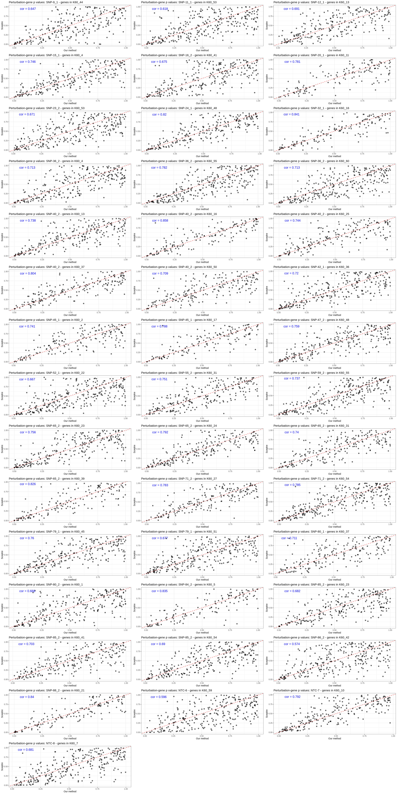
3.4 Genewise distribution
plot_list <- list()
setwd("/project/xuanyao/jiaming/Getting_started/output/Morris/debug/cNMF_10000_wilcox_no_approx_sceptre_perturbation_gene_remove")
for (i in 1:length(hit_list)) {
grna_id <- result_to_analyze$grna_id[i]
gene_list <- ((hit_list[[i]])[1,3])[[1]]
if (length(gene_list)>0){
row_idx <- which(rownames(max_stat) == grna_id)
group_start <- floor((row_idx - 1) / 20) * 20 + 1
group_end <- group_start + 19
folder_name <- paste0(group_start, "_", group_end)
chunk_idx <- row_idx - group_start + 1
file_path <- file.path(folder_name, "normalized_test_tensor", paste0("normalized_test_tensor_chunk_", chunk_idx, ".rds"))
ms <- readRDS(file_path)
for (gene in gene_list){
our_p <- genewise_p_combined_all[grna_id,gene]
sceptre_p <- sceptre_wide[grna_id, gene]
values <- ms[, which(rownames(gene_module_index_matrix)==gene), 1]
values <- values[is.finite(values)]
highlight_value <- ms[1, which(rownames(gene_module_index_matrix)==gene), 1]
df <- data.frame(values = values)
p <- ggplot(df, aes(x = values)) +
geom_histogram(bins = 1000, fill = "lightgray", color = "black") +
geom_vline(xintercept = highlight_value, color = "red", linewidth = 1) +
ggtitle(paste0("Perturbation-gene Wilcoxon test: ", grna_id, " - ", gene)) +
xlab("Values") + ylab("Count") +
annotate("text", x = Inf, y = Inf,
hjust = 1.1, vjust = 1.5, size = 4, color = "blue",
label = paste0("Sceptre p = ", signif(sceptre_p, 3),
"\nOur wilcoxon p = ", signif(our_p, 3))) +
theme_minimal()
plot_list[[(length(plot_list)+1)]] <- p
}
}
}gridExtra::grid.arrange(grobs = plot_list, ncol = 3)
4 May 26 - Replace wilcoxon with NB
4.1 Gene-level
gridExtra::grid.arrange(grobs = plot_list, ncol = 3)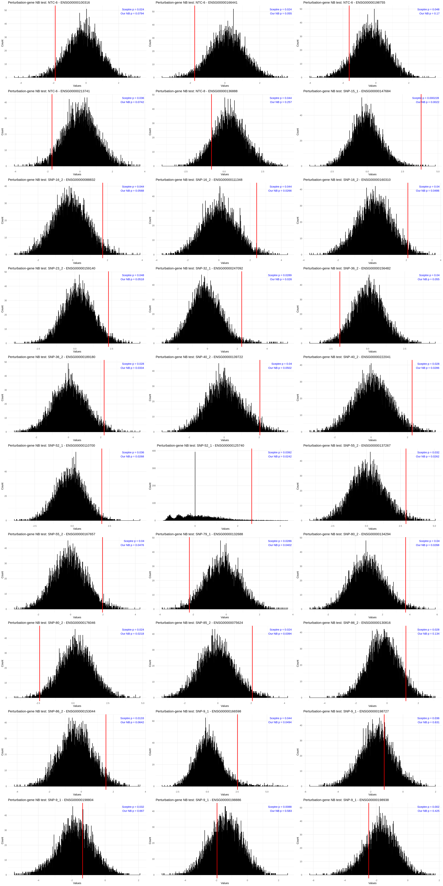
merged_df <- merge(result_df, result_df_2, by = "row.names", all = TRUE)
rownames(merged_df) <- merged_df$Row.names
merged_df$Row.names <- NULL
merged_df <- merged_df[complete.cases(merged_df), ]
colnames(merged_df)[2]<-"wilcoxon_p"merged_df NB_p wilcoxon_p sceptre_p
NTC-6 - ENSG00000100316 0.07939206 0.3243676 0.0240000000
NTC-6 - ENSG00000166441 0.05499450 0.3375662 0.0240000000
NTC-6 - ENSG00000198755 0.17018298 0.7217278 0.0480000000
NTC-6 - ENSG00000213741 0.07419258 0.3067693 0.0360000000
NTC-8 - ENSG00000136888 0.25737426 0.3127687 0.0440000000
SNP-15_1 - ENSG00000147684 0.00219978 0.4345565 0.0002280228
SNP-16_2 - ENSG00000088832 0.05679432 0.4563544 0.0440000000
SNP-16_2 - ENSG00000111348 0.02659734 0.4147585 0.0440000000
SNP-16_2 - ENSG00000160310 0.04859514 0.3877612 0.0400000000
SNP-23_2 - ENSG00000159140 0.05179482 0.3171683 0.0480000000
SNP-32_1 - ENSG00000247092 0.02599740 0.3541646 0.0289284628
SNP-36_2 - ENSG00000156482 0.05499450 0.3205679 0.0400000000
SNP-36_2 - ENSG00000189180 0.03339666 0.4677532 0.0280000000
SNP-40_2 - ENSG00000139722 0.05019498 0.3495650 0.0400000000
SNP-40_2 - ENSG00000222041 0.02859714 0.3033697 0.0280000000
SNP-52_1 - ENSG00000110700 0.02679732 0.4391561 0.0360000000
SNP-52_1 - ENSG00000125740 0.02419758 0.6239376 0.0392043569
SNP-55_2 - ENSG00000137267 0.02619738 0.6933307 0.0320000000
SNP-55_2 - ENSG00000167657 0.04759524 0.3045695 0.0400000000
SNP-79_1 - ENSG00000132688 0.04019598 0.3085691 0.0285689652
SNP-80_2 - ENSG00000134294 0.02679732 0.4743526 0.0400000000
SNP-80_2 - ENSG00000176046 0.02179782 0.7223278 0.0240000000
SNP-85_2 - ENSG00000075624 0.03939606 0.7681232 0.0240000000
SNP-86_2 - ENSG00000130816 0.13418658 0.3989601 0.0280000000
SNP-86_2 - ENSG00000153044 0.06419358 0.7013299 0.0132949738
SNP-9_1 - ENSG00000166598 0.04939506 0.4019598 0.0440000000
SNP-9_1 - ENSG00000198727 0.63073693 0.5795420 0.0360000000
SNP-9_1 - ENSG00000198804 0.66673333 0.7165283 0.0320000000
SNP-9_1 - ENSG00000198886 0.58254175 0.6553345 0.0088000000
SNP-9_1 - ENSG00000198938 0.42515748 0.7647235 0.0020000000library(ggplot2)
library(tidyr)
# 将 merged_df 转换为 long format，便于画多组 y 值
plot_df <- merged_df |>
pivot_longer(cols = c(NB_p, wilcoxon_p), names_to = "method", values_to = "p_value")
# 计算相关系数
cor_nb <- cor(merged_df$NB_p, merged_df$sceptre_p, method = "pearson")
cor_wilcox <- cor(merged_df$wilcoxon_p, merged_df$sceptre_p, method = "pearson")
# 拼接标题
title_text <- paste0("Sceptre significant perturb-gene pairs")
# 作图
ggplot(plot_df, aes(x = sceptre_p, y = p_value, color = method)) +
geom_point() +
labs(title = title_text,
x = "SCEPTRE p-value",
y = "Our/Wilcoxon p-value",
color = "Method") +
theme_minimal()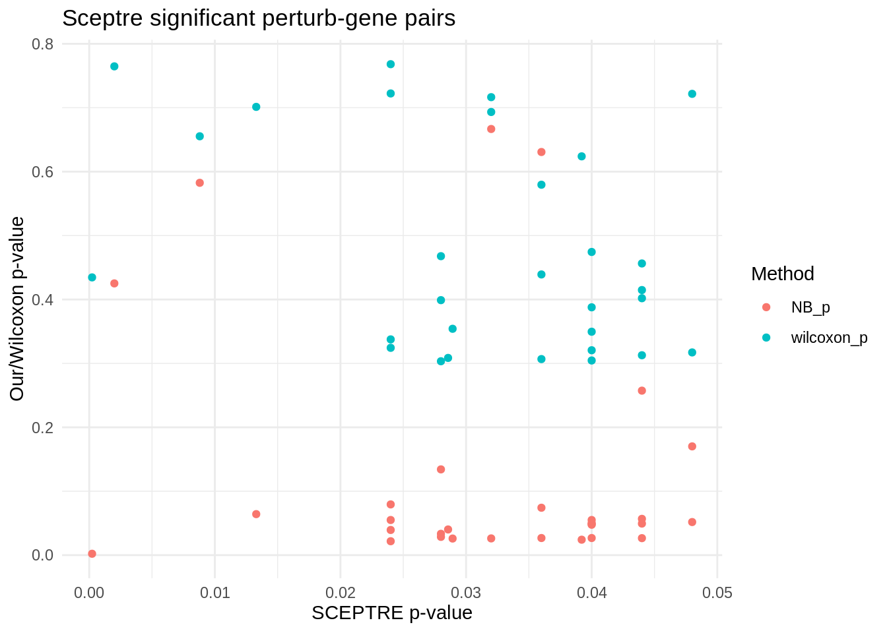
However, the pairs that I selected is the Sceptre(NB) significant pairs but not wilcoxon significant, so if we use NB test, it is naturally more significant than wilcoxon. The next step is to test: For the wilcoxon significant pairs, if we switch to NB test, whether they are still significant.
4.2 Geneset-level
4.2.1 sanity check
base_dir <- "/project/xuanyao/jiaming/Getting_started/output/Morris/debug/cNMF_10000_wilcox_no_approx_sceptre_perturbation_gene_remove/NB_1000_test_statistics"
rds_files <- list.files(base_dir, pattern = "^NB_test_.*\\.rds$", full.names = TRUE)
result_vec <- numeric(length(rds_files))
names(result_vec) <- rep(NA, length(rds_files))
for (i in seq_along(rds_files)) {
file_path <- rds_files[i]
x <- readRDS(file_path)
r1 <- rank(x)[1]
r2 <- rank(-x)[1]
result_vec[i] <- 2 * min(r1, r2)/1000
raw_name <- basename(file_path)
extracted_name <- sub("^NB_test_(.*)\\.rds$", "\\1", raw_name)
names(result_vec)[i] <- extracted_name
}
result_df <- data.frame(NB_p = result_vec)head(result_df) NB_p sceptre_p
SNP-11_1 - ENSG00000003436 0.684 0.500
SNP-11_1 - ENSG00000004779 0.382 0.424
SNP-11_1 - ENSG00000005483 0.114 0.108
SNP-11_1 - ENSG00000008988 0.708 0.716
SNP-11_1 - ENSG00000017797 0.732 0.688
SNP-11_1 - ENSG00000023287 0.842 0.664library(ggplot2)
# 计算相关系数
cor_val <- cor(result_df$NB_p, result_df$sceptre_p, use = "complete.obs")
# 绘图
ggplot(result_df, aes(x = sceptre_p, y = NB_p)) +
geom_point(alpha = 0.6) +
labs(
title = "Scatter plot of NB_p vs. sceptre_p",
subtitle = paste("Correlation =", round(cor_val, 3)),
x = "sceptre_p",
y = "NB_p"
) +
theme_minimal()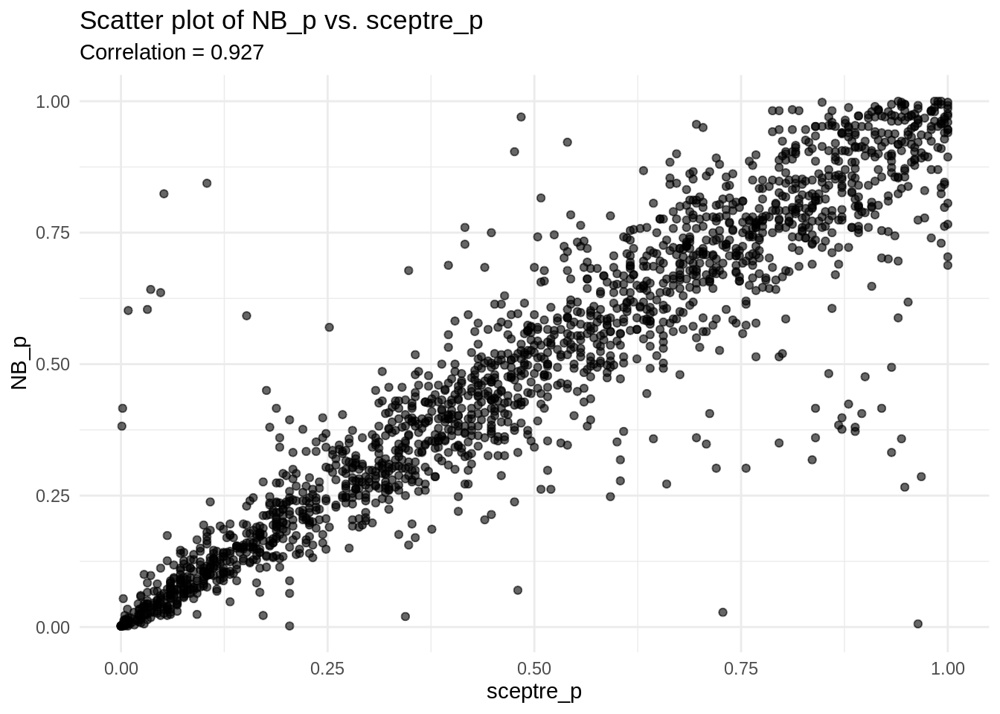
4.2.2 SNP-9_1-K60_44
normalized_test_tensor <- test_normalizer_rcpp(tensor)
combined_test_tensor <- combine_test_statistics_tensor_low_RAM(normalized_test_tensor, module_index_mat)
max_statistics <- (-(min_p_val_fast_low_ram(-test_normalizer(combined_test_tensor), module_index_mat)))
Attaching package: 'matrixStats'The following object is masked from 'package:dplyr':
count precompute_p[[length(precompute_p)+1]] <- compute_final_p_val(max_statistics, 1000,1)
p_vec<-compute_final_p_val(tensor, 1000,3)
acat_p[[length(acat_p)+1]]<-combination.test(p_vec,weights = NA,method = "Cauchy",tail.idx = 1)gridExtra::grid.arrange(
grobs = plot_list,
ncol = 3,
top = grid::textGrob("Genewise NB test", gp = grid::gpar(fontsize = 45, fontface = "bold"))
)
gridExtra::grid.arrange(
grobs = plot_list,
ncol = 3,
top = grid::textGrob("Power Combination", gp = grid::gpar(fontsize = 45, fontface = "bold"))
)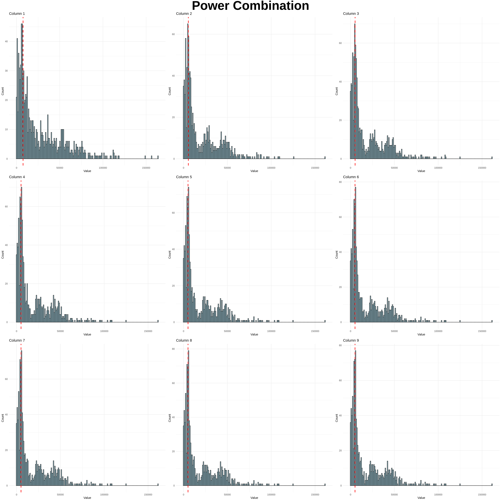
4.2.3 SNP-11_1-K60_53
normalized_test_tensor <- test_normalizer_rcpp(tensor)
combined_test_tensor <- combine_test_statistics_tensor_low_RAM(normalized_test_tensor, module_index_mat)
max_statistics <- (-(min_p_val_fast_low_ram(-test_normalizer(combined_test_tensor), module_index_mat)))
precompute_p[[length(precompute_p)+1]] <- compute_final_p_val(max_statistics, 1000,1)
p_vec<-compute_final_p_val(tensor, 1000,3)
acat_p[[length(acat_p)+1]]<-combination.test(p_vec,weights = NA,method = "Cauchy",tail.idx = 1)gridExtra::grid.arrange(
grobs = plot_list,
ncol = 3,
top = grid::textGrob("Genewise NB test", gp = grid::gpar(fontsize = 45, fontface = "bold"))
)
gridExtra::grid.arrange(
grobs = plot_list,
ncol = 3,
top = grid::textGrob("Power Combination", gp = grid::gpar(fontsize = 45, fontface = "bold"))
)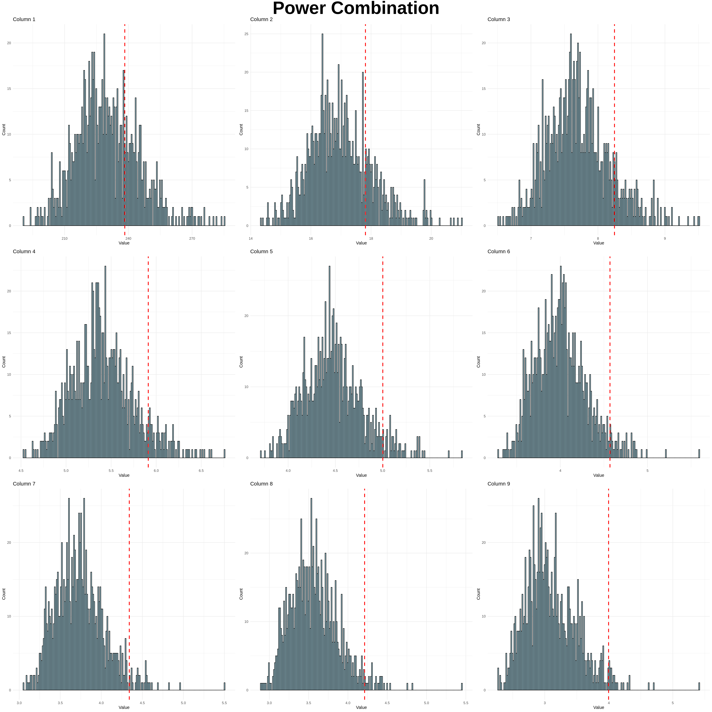
### SNP-40_2-K60_13 normalized_test_tensor <- test_normalizer_rcpp(tensor)
combined_test_tensor <- combine_test_statistics_tensor_low_RAM(normalized_test_tensor, module_index_mat)
max_statistics <- (-(min_p_val_fast_low_ram(-test_normalizer(combined_test_tensor), module_index_mat)))
precompute_p[[length(precompute_p)+1]] <- compute_final_p_val(max_statistics, 1000,1)
p_vec<-compute_final_p_val(tensor, 1000,3)
acat_p[[length(acat_p)+1]]<-combination.test(p_vec,weights = NA,method = "Cauchy",tail.idx = 1)
library(ggplot2)
# 初始化列表保存图
plot_list <- list()
# 获取列数
n_col <- dim(normalized_test_tensor)[2]
for (j in 1:n_col) {
# 取出第 j 列的向量
vec <- normalized_test_tensor[, j, 1]
# 第一个值作为参考线位置
mark_val <- vec[1]
# 构造数据框
df <- data.frame(value = vec)
# 绘图
p <- ggplot(df, aes(x = value)) +
geom_histogram(color = "black", fill = "lightblue", bins = 200) +
geom_vline(xintercept = mark_val, color = "red", linetype = "dashed", size = 1) +
labs(
title = paste("Gene", j),
x = "Value", y = "Count"
) +
theme_minimal()
plot_list[[j]] <- p
}gridExtra::grid.arrange(
grobs = plot_list,
ncol = 3,
top = grid::textGrob("Genewise NB test", gp = grid::gpar(fontsize = 45, fontface = "bold"))
)
gridExtra::grid.arrange(
grobs = plot_list,
ncol = 3,
top = grid::textGrob("Power Combination", gp = grid::gpar(fontsize = 45, fontface = "bold"))
)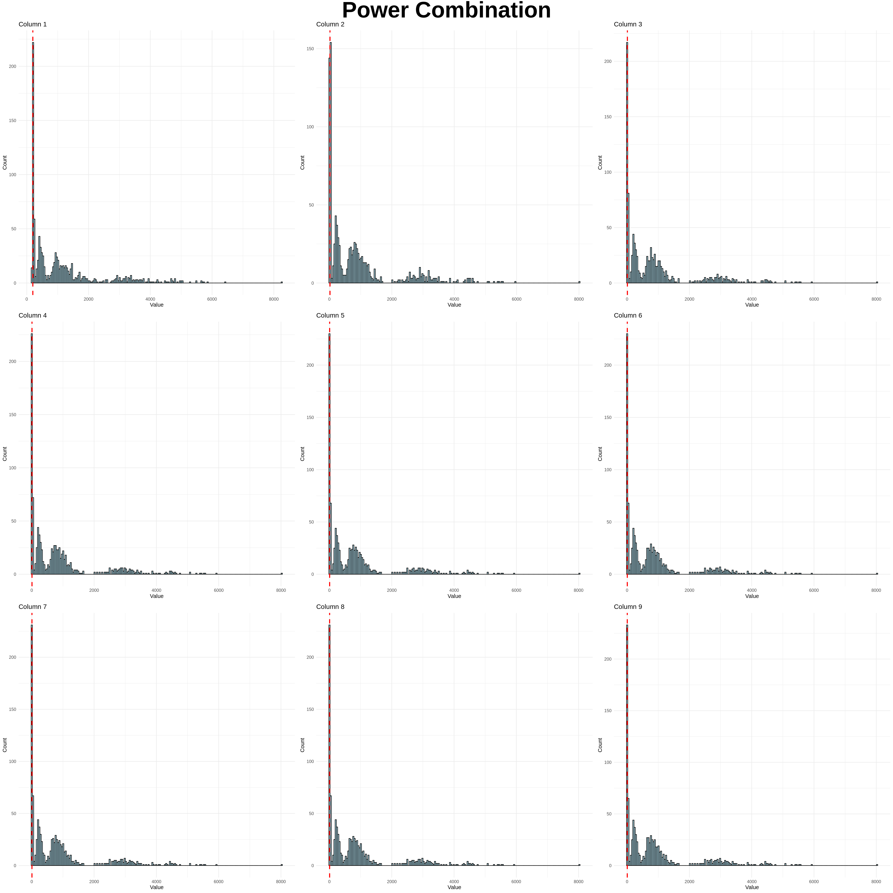
4.2.4 SNP-40_2-K60_25
gridExtra::grid.arrange(
grobs = plot_list,
ncol = 3,
top = grid::textGrob("Genewise NB test", gp = grid::gpar(fontsize = 45, fontface = "bold"))
)
gridExtra::grid.arrange(
grobs = plot_list,
ncol = 3,
top = grid::textGrob("Power Combination", gp = grid::gpar(fontsize = 45, fontface = "bold"))
)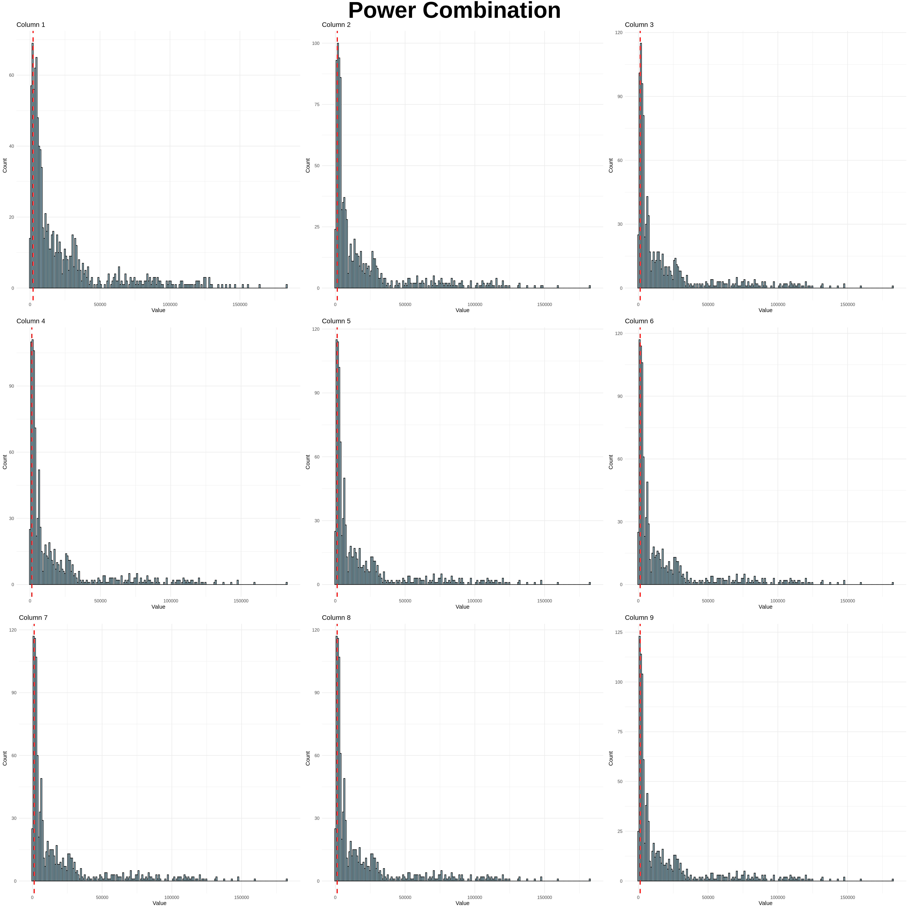
4.2.5 SNP-40_2-K60_50
gridExtra::grid.arrange(
grobs = plot_list,
ncol = 3,
top = grid::textGrob("Genewise NB test", gp = grid::gpar(fontsize = 45, fontface = "bold"))
)
gridExtra::grid.arrange(
grobs = plot_list,
ncol = 3,
top = grid::textGrob("Power Combination", gp = grid::gpar(fontsize = 45, fontface = "bold"))
)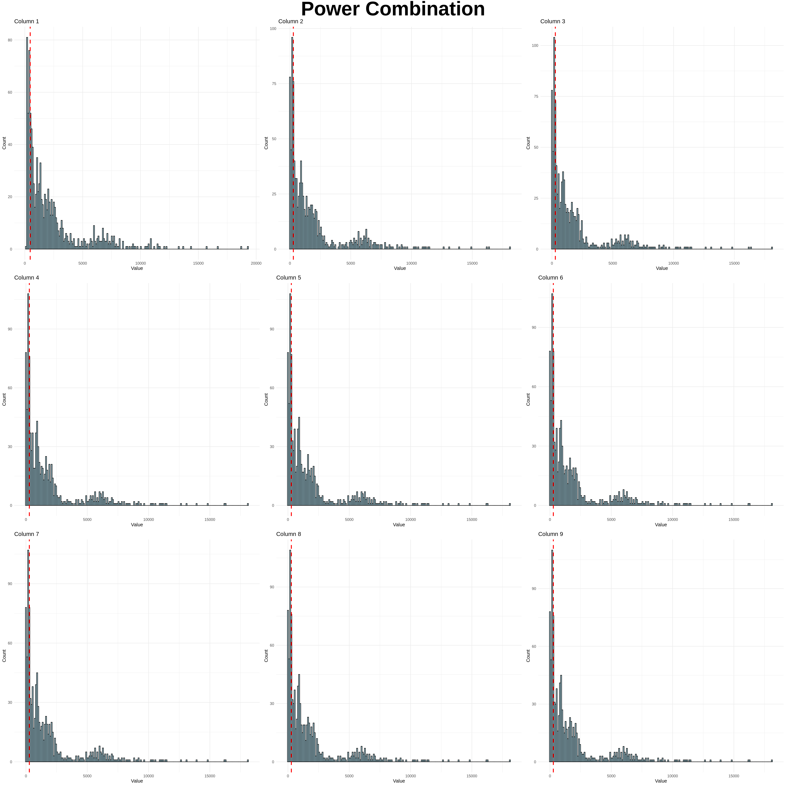
4.2.6 SNP-65_2-K60_23
gridExtra::grid.arrange(
grobs = plot_list,
ncol = 3,
top = grid::textGrob("Genewise NB test", gp = grid::gpar(fontsize = 45, fontface = "bold"))
)
gridExtra::grid.arrange(
grobs = plot_list,
ncol = 3,
top = grid::textGrob("Power Combination", gp = grid::gpar(fontsize = 45, fontface = "bold"))
)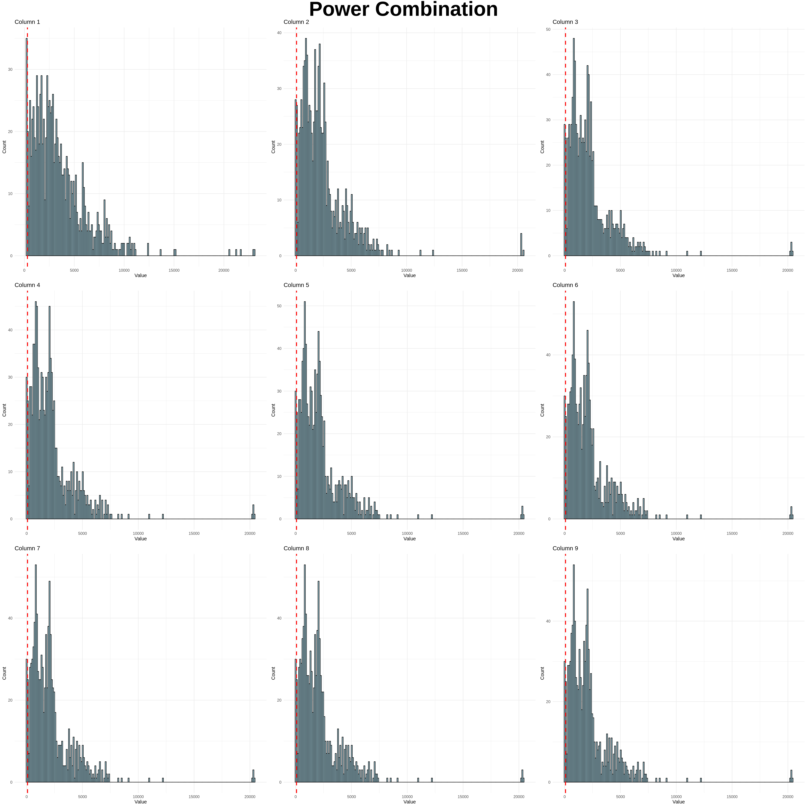
4.2.7 SNP-65_2-K60_24
gridExtra::grid.arrange(
grobs = plot_list,
ncol = 3,
top = grid::textGrob("Genewise NB test", gp = grid::gpar(fontsize = 45, fontface = "bold"))
)
gridExtra::grid.arrange(
grobs = plot_list,
ncol = 3,
top = grid::textGrob("Power Combination", gp = grid::gpar(fontsize = 45, fontface = "bold"))
)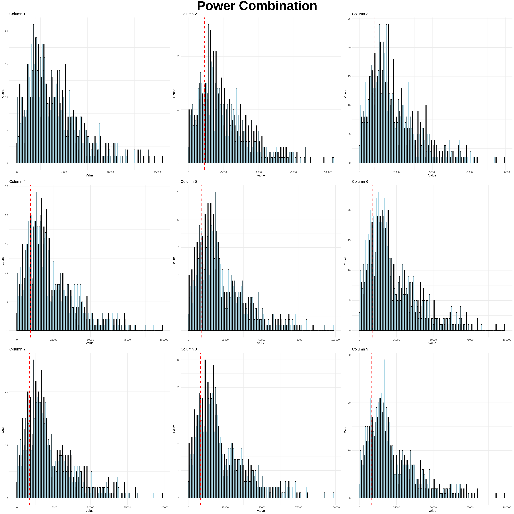
4.2.8 SNP-65_2-K60_31
gridExtra::grid.arrange(
grobs = plot_list,
ncol = 3,
top = grid::textGrob("Genewise NB test", gp = grid::gpar(fontsize = 45, fontface = "bold"))
)
gridExtra::grid.arrange(
grobs = plot_list,
ncol = 3,
top = grid::textGrob("Power Combination", gp = grid::gpar(fontsize = 45, fontface = "bold"))
)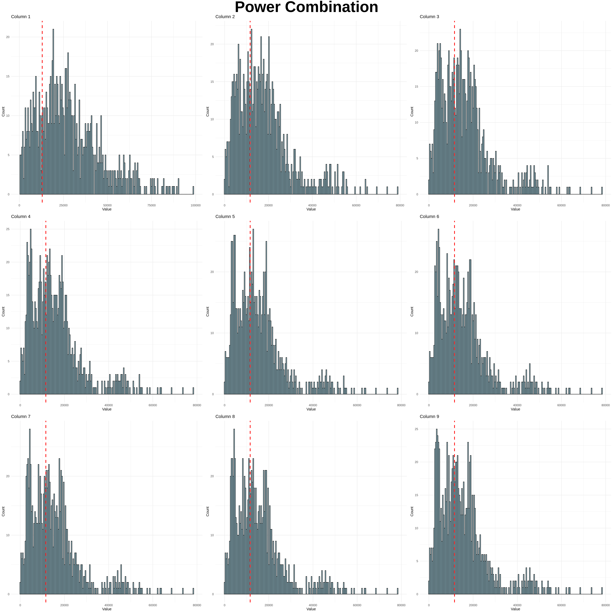
4.2.9 SNP-65_2-K60_39
gridExtra::grid.arrange(
grobs = plot_list,
ncol = 3,
top = grid::textGrob("Genewise NB test", gp = grid::gpar(fontsize = 45, fontface = "bold"))
)
gridExtra::grid.arrange(
grobs = plot_list,
ncol = 3,
top = grid::textGrob("Power Combination", gp = grid::gpar(fontsize = 45, fontface = "bold"))
)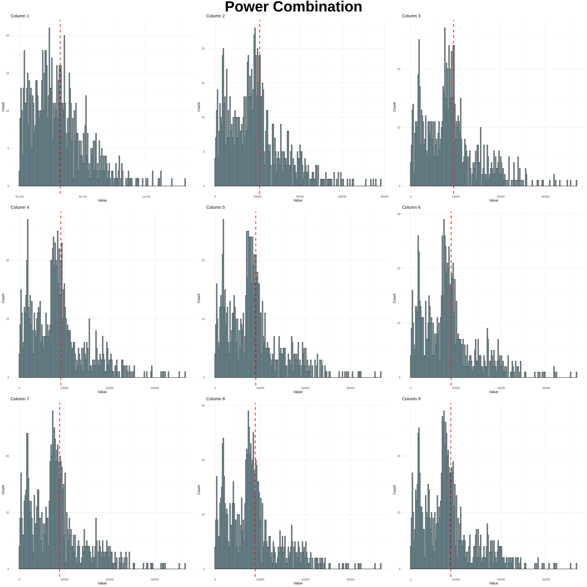
4.2.10 Comparison: NB+ACAT; NB+power comb
# 提取 module 名
module_names <- sapply(precompute_p, function(x) colnames(x))
# 提取 p 值
pre_p <- sapply(precompute_p, function(x) as.numeric(x))
acat_p_vec <- unlist(acat_p)
# 合并成 dataframe
df <- data.frame(
pair = module_names,
`NB_powercomb` = pre_p,
NB_acat = acat_p_vec
)
prefix_vec <- c("SNP-9_1", "SNP-11_1", "SNP-40_2", "SNP-40_2", "SNP-40_2","SNP-65_2","SNP-65_2","SNP-65_2","SNP-65_2")
# 添加前缀
df$pair <- paste(prefix_vec, df$pair, sep = "-")
df pair NB_powercomb NB_acat
1 SNP-9_1-K60_44 0.711 0.09210733
2 SNP-11_1-K60_53 0.056 0.13574407
3 SNP-40_2-K60_13 0.943 0.14614093
4 SNP-40_2-K60_25 0.891 0.11717071
5 SNP-40_2-K60_50 0.752 0.18690687
6 SNP-65_2-K60_23 0.961 0.09270302
7 SNP-65_2-K60_24 0.792 0.17376174
8 SNP-65_2-K60_31 0.633 0.18034373
9 SNP-65_2-K60_39 0.480 0.09501150
sessionInfo()R version 4.1.0 (2021-05-18)
Platform: x86_64-pc-linux-gnu (64-bit)
Running under: CentOS Linux 8
Matrix products: default
BLAS/LAPACK: /software/openblas-0.3.13-el8-x86_64/lib/libopenblas_skylakexp-r0.3.13.so
locale:
[1] LC_CTYPE=en_US.UTF-8 LC_NUMERIC=C LC_TIME=C
[4] LC_COLLATE=C LC_MONETARY=C LC_MESSAGES=C
[7] LC_PAPER=C LC_NAME=C LC_ADDRESS=C
[10] LC_TELEPHONE=C LC_MEASUREMENT=C LC_IDENTIFICATION=C
attached base packages:
[1] parallel stats graphics grDevices utils datasets methods
[8] base
other attached packages:
[1] matrixStats_1.1.0 speedglm_0.3-5 biglm_0.9-3
[4] DBI_1.2.3 MASS_7.3-60 ACAT_0.91
[7] eulerr_7.0.2 gridExtra_2.3 heavytailcombtest_1.0.0
[10] sgt_2.0 numDeriv_2016.8-1.1 optimx_2024-12.2
[13] peakRAM_1.0.2 BH_1.84.0-0 Matrix_1.6-3
[16] sceptredata_0.99.0 sceptre_0.10.0 presto_1.0.0
[19] data.table_1.14.8 Rcpp_1.0.12 tidyr_1.3.0
[22] tibble_3.2.1 readr_1.4.0 dplyr_1.1.4
[25] ggplot2_3.5.1 workflowr_1.7.1
loaded via a namespace (and not attached):
[1] httr_1.4.2 sass_0.4.9 jsonlite_1.8.7
[4] bslib_0.7.0 getPass_0.2-2 highr_0.11
[7] yaml_2.2.1 pillar_1.9.0 lattice_0.22-5
[10] glue_1.6.2 rmutil_1.1.10 digest_0.6.33
[13] promises_1.2.0.1 polyclip_1.10-6 colorspace_2.1-0
[16] plyr_1.8.6 htmltools_0.5.8.1 httpuv_1.6.1
[19] pkgconfig_2.0.3 invgamma_1.1 purrr_1.0.2
[22] mvtnorm_1.3-3 scales_1.3.0 processx_3.8.4
[25] whisker_0.4.1 later_1.2.0 pracma_2.4.4
[28] git2r_0.32.0 farver_2.1.1 generics_0.1.3
[31] ellipsis_0.3.2 cachem_1.0.8 withr_2.5.2
[34] cli_3.6.1 crayon_1.5.2 magrittr_2.0.3
[37] evaluate_0.23 ps_1.7.5 fs_1.6.3
[40] fansi_1.0.5 RcppArmadillo_0.10.5.0.0 tools_4.1.0
[43] hms_1.1.0 lifecycle_1.0.4 stringr_1.5.1
[46] munsell_0.5.0 callr_3.7.6 compiler_4.1.0
[49] jquerylib_0.1.4 rlang_1.1.2 grid_4.1.0
[52] nloptr_1.2.2.2 rstudioapi_0.15.0 labeling_0.4.3
[55] rmarkdown_2.27 gtable_0.3.0 reshape2_1.4.4
[58] R6_2.5.1 knitr_1.48 fastmap_1.1.1
[61] utf8_1.2.1 rprojroot_2.0.4 polylabelr_0.3.0
[64] stringi_1.6.2 vctrs_0.6.4 tidyselect_1.2.0
[67] xfun_0.51